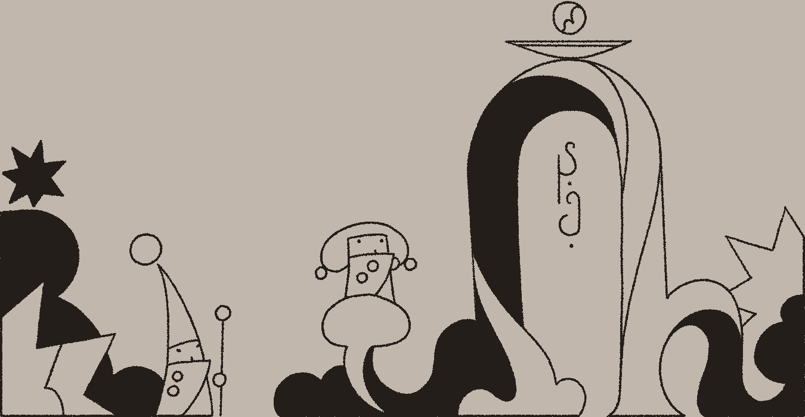

When I'm not working on visual art, I will wander into other media while exploring ideas. This section acts as a repository for all the artistic driftwood not covered by artwork or collections.
For now, it holds essays and music — but we'll see what other media I get into over time.